Algorithmus (Hauptkomponentenanalyse)
Die Hauptkomponentenanalyse untersucht die Beziehungen zwischen den Variablen. Sie kann verwendet werden, um die Anzahl der Variablen in Regression, Clustering usw. zu reduzieren.
Jede Hauptkomponente in der Hauptkomponentenanalyse ist die lineare Kombination der Variable und ergibt eine maximierte Varianz. X sein eine Matrix für n Beobachtungen nach p Variablen, und die Kovarianzmatrix sei S. Für eine lineare Kombination der Variablen
- 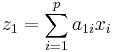
, wobei 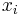 die i-te Variable ist, sind 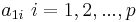 die linearen Kombinationskoeffizienten für 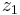. Sie können die durch einen Spaltenvektor 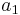 gekennzeichnet und durch 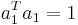 normiert werden. Die Varianz von ist 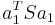.
Der Vektor wird durch Maximieren der Varianz gefunden. Und wird als erste Hauptkomponente bezeichnet. Die zweite Hauptkomponente kann auf die gleiche Weise durch Maximieren gefunden werden:
- 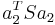 unterliegt den Nebenbedingungen 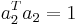 und 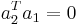
Es ergibt die zweite Hauptkomponente, die wie die erste orthogonal ist. Die verbleibenden Hauptkomponenten können auf ähnliche Weise abgeleitet werden. Tatsächlich können Koeffizienten 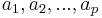 aus den Eigenvektoren der Matrix S berechnet werden. Origin verwendet verschiedene Methoden je nach der Art und Weise, wie fehlende Werte ausgeschlossen werden.
Listenweiser Ausschluss von fehlenden Werten
Eine Beobachtung, die einen oder mehrere fehlende Werte enthält, wird aus der Analyse ausgeschlossen. Eine Matrix 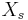 für SVD kann von X abgeleitet werden, abhängig von dem Matrixtyp für die Analyse.
Matrixtyp für Analyse
-
- sei die Matrix X, bei der von jeder Variable der Mittelwert jeder Spalte subtrahiert wird und jede Spalte nach 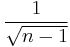 skaliert wird.
-
- sei die Matrix X, bei der der Mittelwert jeder Spalte von jeder Variable subtrahiert wird und jede Spalte durch 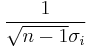 skaliert wird, wobei 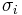 die Standardabweichung der i-ten Variable ist.
Zu berechnende Eigenschaften
SVD wird durchgeführt für .
- 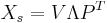
wobei V eine n x p-Matrix mit 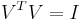, P eine p x p-Matrix und eine diagonale Matrix mit diagonalen Elementen 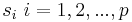 ist.
-
- 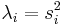
- Eigenwerte sind in absteigender Ordnung sortiert. Der Anteil der Varianz erklärt durch die i-te Hauptkomponente lautet 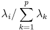.
- Eigenvektoren sind auch bekannt als Ladungen oder Koeffizienten für Hauptkomponenten. Jede Spalte in P ist der Eigenvektor, der dem Eigenwert oder der Hauptkomponente entspricht.
- Beachten Sie, dass das Vorzeichen des Eigenvektors für SVD nicht einzigartig ist. Origin normiert die Vorzeichen, indem es die Summe jeder Spalte positiv macht.
- Jede Spalte in 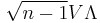 entspricht den Scores je nach Hauptkomponente. Scores sind die fehlenden Werte entsprechend einer Beobachtung, die fehlende Werte enthält.
-
Beachten Sie, dass die Varianz der Scores für jede Hauptkomponente gleich dem entsprechenden Eigenwert für diese Methode ist.
- Scores für jede Hauptkomponente werden standardisiert, so dass sie über Varianz bezüglich der Einheiten verfügen.
Paarweiser Ausschluss von fehlenden Werten
Eine Beobachtung wird aus der Berechnung der Kovarianz oder Korrelation zwischen zwei Variablen nur ausgeschlossen, wenn fehlende Werte in einer der zwei Variablen für die Beobachtung existieren.
Eigenwerte und Eigenvektoren werden aus der Kovarianz- oder Korrelationsmatrix S berechnet.
- 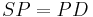
, wobei P eine p x p -Matrix und D eine Diagonalmatrix mit diagonalen Elementen 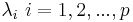 ist.
- 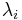 ist der i-te Eigenwert für die i-te Hauptkomponente. Und Eigenwerte werden in absteigender Reihenfolge sortiert.
- Beachten Sie, dass Eigenwerte für fehlende Werte, die paarweise ausgeschlossen wurden, negativ sein können, was für Hauptkomponenten keinen Sinn macht. Origin setzt die Ladung und Scores für einen negativen Eigenwert auf Null.
- Jede Spalte in P ist der Eigenvektor, der dem Eigenwert oder der Hauptkomponente entspricht.
- Beachten Sie, dass das Vorzeichen des Eigenvektors nicht einzigartig ist. Origin normiert die Vorzeichen, indem es die Summe jeder Spalte positiv macht.
-
- 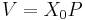
- wobei 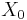 die Matrix X ist, bei der der Mittelwert von jeder Spalte von jeder Variablen subtrahiert wurde.
- Scores sind die fehlenden Werte entsprechend einer Beobachtung, die fehlende Werte enthält.
- Beachten Sie, dass die Varianz der Scores für jede Hauptkomponente gleich dem entsprechenden Eigenwert für diese Methode ist.
-
- Scores für jede Hauptkomponente werden nach der Quadratwurzel ihres Eigenwerts skaliert.
Bartletts Test
Bartletts Test testet die Gleichheit der verbleibenden p-k Eigenwerte. Er ist nur verfügbar, wenn die Analysematrix eine Kovarianzmatrix ist.
- 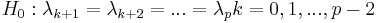
Es nähert sich einer 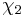 Verteilung an mit 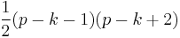 Freiheitsgraden.
- 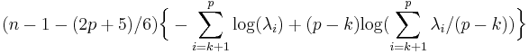